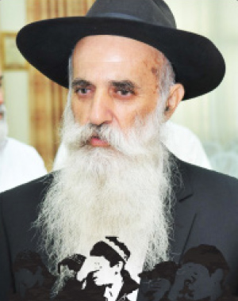

The Man Who Collected Diamonds
Forty years ago, R’ Yosef Ladaiov had yechidus and asked the Rebbe for permission to stop his work in registering children in Chabad schools and to go into the diamond business. The Rebbe negated his plan and told him to continue with his holy work. R’ Yosef, as a faithful Chassid, did just that. Fo

COLLECTING SOULS
I knew R’ Yosef over the last twenty years, since I came to live in Nachalat Har Chabad. From time to time he told me stories about the work he did in Samarkand that entailed mesirus nefesh.
One of our conversations that remains with me more than all the others was a farbrengen that took place one Sukkos in Crown Heights two years ago. It was a farbrengen hosted by Eshel-Hachnasas Orchim and it took place in the Strasbourg sukka. There were young bachurim present as well as older Chassidim.
After drinking mashke and singing soulful niggunim, I asked R’ Yosef to tell us about one of his private meetings with the Rebbe. After a fair amount of nudging, he related the following:
“A few years after I arrived in Eretz Yisroel, I went to the Rebbe for the first time. At that time, I was busy locating children of immigrants for the purpose of putting them into proper schools, mainly the Yeshivas HaBukharim in Kfar Chabad. I had done work like this before when I was a teenager in Samarkand. Back then, I helped the Chabad young men who had started secret schools. Since I knew the Bukharin community well, I was successful, with Hashem’s help, in convincing many parents to send their children to these schools.
“I continued this work in Eretz Yisroel under the auspices of Chamah (Chaburas Mezakei HaRabbim) led by R’ Moshe Nisselevitz. I registered the children of new immigrants in proper schools, at first in Ashdod and then in Rishon L’Tziyon, until the Yeshivas HaBukharim was founded in Kfar Chabad. As a young man but someone with experience, I was asked to bring talmidim to this yeshiva. Boruch Hashem, I was successful.
“The thing is, I had to support my family and the salary that I got was nowhere near enough. Together with my wife, we concluded that I had to find work that paid. At the time, I had offers in the diamond field.
“I went to the Rebbe for the first time and when I had yechidus I described our situation. On the one hand, I wanted to continue saving children by providing them with a proper chinuch. On the other hand, I knew I could not manage financially under the present work conditions.
“The Rebbe did not hesitate for a moment. He firmly told me to continue doing what I had been doing, the work that I had done in Samarkand.
“Despite what the Rebbe said, I did not think I would continue doing this much longer, but I ended up working decades longer for various Chabad organizations. Thousands of children attended Chabad schools and because of that, they began observing Torah and mitzvos. Many of them now have religious-Chassidic homes.”
TORAH IN THE
SHADOW OF THE KGB
R’ Yosef Ladaiov was born in 5709/1949 in Samarkand. His father was R’ Yitzchok. He gained a lot from his grandfather, R’ Avrohom Chai Ladaiov, who was a close student of R’ Simcha Gorodetzky, the shliach of the Rebbe Rayatz to Samarkand.
A few years ago, R’ Yosef described his undercover work to Beis Moshiach. Here are some excerpts from his memoirs:
“At age 16 I began learning with children who had nobody to learn with them. At first I secretly taught them alef-beis, p’sukim, and t’filla. Even in those difficult times I wasn’t afraid. I always wore a kippa and tzitzis and those who were there know that this was no simple matter.
“Over time I developed a relationship with R’ Moshe Nisselevitz. R’ Moshe asked me to open secret yeshivos and shiurim and I enthusiastically agreed. That is how the great outreach work in Samarkand began with R’ Moshe financing the work and my making it happen.
“The work was extremely difficult. Every boy, out of the thousand and more who learned in the secret schools we started, is a story in himself. We had to instruct each child in what to say and how to say it in the event that he would be questioned. There were situations in which even the parents did not know where their sons learned. I remember that one time I took a boy to one of our chadarim and his father was furious about the ‘kidnapping’ of his son. He threatened to inform the authorities and we had to give him a lot of money so he would leave us alone.
“In addition to bringing talmidim and instructing them, we had to get teachers to come and teach the children. That wasn’t easy, since a teacher who taught Judaism was putting his life in danger. I remember for example R’ Yochai Yaakobov who taught in Tomchei T’mimim in the early years and sat in jail for seven years. At first he was reluctant to teach and only later agreed, though not before we got him a house within a house. Then there was R’ Menachem Malaiov who sat in jail for many years who nevertheless agreed to teach 25 bachurim every day!”
The tycoon and philanthropist Lev Leviev who lived in Tashkent also learned in Samarkand thanks to R’ Yosef Ladaiov:
“I would go to other cities and towns to bring talmidim to the schools we started. On one of my visits to Tashkent I met R’ Avner Leviev a”h who knew that his brother [R’ Yaakov] taught Judaism in my house. He asked me to take his son Levi for half a year, which we did.”
What gave you the strength to carry on?
“The Chassidishe farbrengens, that was the adrenaline that fueled me with the strength to carry on the difficult work. Every Shabbos Mevarchim and on special days we would bring about fifty bachurim to a farbrengen. The bachurim would come one by one to the house where the farbrengen was taking place, despite the fear of an ‘evil eye.’
“The farbrengens took place in a different house each time, once by R’ Tzvi Hirsch (Herschel) Lerner a”h, once by R’ Eliezer Mishulovin a”h and once in the home of one of the two brothers R’ Berel or R’ Hillel Zaltzman. If you attended these farbrengens you got so much.”
How were you able to do everything you did under the close surveillance of the KGB?
“The Rebbe watched over us, that is the only way I can explain how we managed to bring more than a thousand boys to learn Torah every day for years and under the watchful eyes of the police. We changed locations every few weeks. We got ‘intelligence warnings’ about their plans to conduct searches in certain homes and we were saved, but definitely, without the feeling and the reality that the Rebbe was with us, even in that darkness, we would not have done what we did.”
THIS IS YOUR SHLICHUS
In 5731 the Ladaiov family made aliya and R’ Yosef, then 22, began working in diamonds. The Chamah organization, that had begun its work in the USSR, reopened in Eretz Yisroel and members of the organization told Yosef that the Rebbe said he should join them.
First a learning program was started in Ashdod where he gathered immigrant children from Bukhara and they learned in the local shul. After a short time, the talmidim moved to Yeshivas Achei T’mimim in Rishon L’Tziyon and from there to Kfar Chabad where Yeshivas HaBukharim was founded for them. In every phase, R’ Yosef worked hard to register students. This entailed talking to the parents and convincing them to leave their sons in Chabad schools so they would go in the path of Torah and mitzvos.
R’ Yosef married his wife Leah and the work in registering students continued. In those days, R’ Yosef worked very intensively, going to people’s homes and talking to parents at length about the necessity of preserving tradition. Once they were convinced and agreed, he would take the children in his car and bring them directly to the Yeshivas HaBukharim in Kfar Chabad and the girls to Beis Rivka or Chabad schools in Tzfas.
As mentioned earlier, after a few years, when the meager salary was not enough to support his family, he wanted to work in diamonds. In 5735, he and his wife went to Beis Chayeinu and in yechidus the Rebbe told him to continue doing his holy work of registering children.
His wife found this hard to accept and after the yechidus she wrote to the Rebbe in French (her native language) that due to parnasa difficulties she wanted to stay in New York in order to find work. The Rebbe responded with a note in which he rejected this idea:
Since 1) your husband has been very successful in saving quite a few of the Jewish people – spiritual pikuach nefesh, literally – for a life of Torah and mitzvos (especially when through his influence they went to schools with a proper chinuch al taharas ha’kodesh)
2) the necessity of these activities in Eretz Yisroel still exists – obviously he needs to continue in Eretz Yisroel – and joyously – and Hashem will bless you with success, also in your personal matters.
Since, for the success of the work, it must be done with serenity of body and soul, I hope that when your husband speaks with the hanhala of Chamah in Eretz Yisroel once again, that according to Chamah’s finances they will add to his salary and try, as much as possible, regarding a car … Enclosed is my participation in the expenses of your visit here.
This clear answer from the Rebbe left no room for doubt. He needed to continue the work of spreading the wellsprings in Eretz Yisroel under the auspices of Chamah.
One year later, in 5736, R’ Yosef won a raffle for a ticket to the Rebbe. “We both went again,” said Mrs. Ladaiov, “and once again, I wrote before the yechidus about our financial situation. When we entered for yechidus and submitted the letter to the Rebbe, the Rebbe did not open it but moved it aside. Then he looked at my husband and said, ‘Last year when you were here, I did not allow you and now too, I do not allow you …’”
R’ Yosef and his wife finally realized that this was their mission in life and there was nothing further to ask. From then on, for decades, he worked tirelessly to register children in Chabad schools.
SAVING LIVES
About a year ago, R’ Yosef began having pain and it was discovered that he was suffering from the dreaded disease lo aleinu. It was a year of suffering and pain but there were also moments of satisfaction and nachas when, a few months ago, there was a celebration in honor of his 65th birthday in which he was recognized for his work for the Bukharin community.
There were dozens of guests, family members, students and friends, who gathered to express their appreciation to R’ Ladaiov who saved many of their community and led them to the path of Torah and mitzvos. It was a moving evening with his talmidim, some of whom are distinguished members of the Bukharin community. Lev Leviev, president of the Bukharin Jewish Congress was there as were R’ Hillel Chaimov who emceed the event, Knesset member Amnon Cohen, and others.
R’ Hillel Chaimov, a distinguished rav in the Bukharin community, began the event with his personal story. This moved everyone and demonstrated how vital R’ Ladaiov’s work was and how it affected generations.
“I was in eighth grade in Yeshivas HaBukharim in Kfar Chabad. It was toward the end of the year when my father told me that the following year I would be attending the government religious high school so I could get an education and eventually become a doctor so that I could support my family. I was very shocked by this and did not know what to do. I loved the learning in yeshiva but my father wanted me to study a profession.
“R’ Yosef heard about this. Where did he hear this from? Nobody knows. But a few days later, he knocked at the door of my home together with R’ Boris Yitzchakov. My father, R’ Menachem Chaimov, welcomed them graciously. R’ Ladaiov explained to my parents how important it was that I, young Hillel, continue learning Torah in yeshiva. ‘Listen, if he studies medicine, he can save some lives, but if he studies Torah, his Torah study will protect the entire world. Is there anything greater than that?’ R’ Ladaiov sat there for a while until he got a commitment from my parents that I could continue learning in yeshiva. A few days later, before the start of yeshiva in Elul, R’ Ladaiov called our neighbors (there still weren’t telephones in all homes) and through them he conveyed the message: In two days I will come and take Hillel to yeshiva.
“R’ Ladaiov and R’ Yitzchakov weren’t wrong. I continued learning Torah in Yeshivas Achei T’mimim Chabad in Rishon L’Tziyon. Since then, I have had the privilege of giving shiurim and lectures that bring merit to the public. If I had not remained in yeshiva, where would I be today? I, and those like me, the multitudes of his students, work among the Bukharin community in Eretz Yisroel and the world. What is mine and what is theirs, is his.”
Mrs. Rina Leibov, member of the presidium of the Congress, also spoke in honor of R’ Ladaiov:
“It was a few days after we made aliya in 5734. We heard knocks at the door. Who could it be? The door opened and in the doorway was R’ Yosef Ladaiov in his usual dynamic manner. My father knew him from Samarkand. I don’t know how he managed to convince him to send his four sons, my brothers, to yeshiva. He did not suffice with that but told my father, ‘Your daughter also needs to learn in the right place.’ My father was taken aback. How could he part from his only daughter? R’ Yosef promised him that it would be alright and we all went to Beis Rivka to see where I would be learning.”
During the evening more and more moving and unusual stories were told about mesirus nefesh for Torah and R’ Ladaiov’s effect on the spiritual futures of Jewish children in Russia and later, in Eretz Yisroel.
UNTIL HIS FINAL DAY
R’ Ladaiov underwent surgery during the Days of Awe of a year ago which was followed by harsh treatments, but he remained strong as a rock. Despite his suffering he would go to shul and daven together with everyone even when it sometimes seemed as though he would collapse from weakness. During this period, his youngest son was with him and helped him tremendously, but after a year, it was the son’s turn to go on K’vutza. Although his condition was precarious, R’ Yosef insisted on his son going on K’vutza because that is what the Rebbe wants.
Until his final days he exerted himself to attend shul even though it cost him, physically and emotionally. Shabbos B’Reishis was the last time he appeared in shul.
The doctors told him he had a few days left. Every day, a doctor went to his house to see how to make things easier for him, if only a bit. Each time the doctor came, R’ Yosef insisted that he put on t’fillin before he examined him. One of the doctors said he doesn’t do that and there was no reason for him to do so now, but R’ Yosef said, “You won’t examine me until you do.” This was said in a whisper but firmly and the doctor gave in and put on t’fillin.
That was R’ Yosef, stubborn for holy matters.
He is survived by his wife Leah and his children: Shneur Zalman of Crown Heights, Daniel of Crown Heights, Yehudis Lifshitz of Nachalat Har Chabad, Devora Ben Abu of Crown Heights, Chana Kozlovsky of Crown Heights, Avrohom Meir of Kiryat Gat, Penina Saadi of Nachalat Har Chabad and Eliyahu.
BACK TO SAMARKAND
In recent years, R’ Yosef Ladaiov and his brother wanted to work among the Jews of the CIS to be mekarev them to Torah and mitzvos after the religious disconnect of decades. After much deliberation they went on a special trip and each place they went they worked on mivtza t’fillin and mezuza. They put t’fillin on many and gave pairs of t’fillin as gifts and put up mezuzos.
It was moving to see the Ladaiov brothers who had worked in their youth with mesirus nefesh in Samarkand, returning there decades later in order to put t’fillin on with people and put up mezuzos.
The brothers did this a number of years in a row. Each time they invested a lot of money and tremendous effort in order to connect once again with lost souls who remain in distant towns and villages and reignite their faith.
Shneur Zalman Berger. "The Man Who Collected Diamonds." Beis Moshiach, no. 955 (January 1, 2015).